Frequency and Phase Movement Analysis by Orthogonal Demodulation - Part 3 More Application Examples of ODM
Hideo Okawara, Verigy
Paper-ID: 123520 May 2010
Preface to the Papers
In mixed signal system-on-a-chip (SOC) testing, there are lots of needs to measure phase and frequency change of signals. For instance, in a PLL circuitry, the lock-in time is one of the most typical test items. In a read/write channel device for hard disc drives, small pulse shifts for write pre-compensation are tested. Waveform digitizers or samplers that are typical mixed signal pieces of equipment can measure such changing frequency/phase with sophisticated digital signal processing. The sampled data is processed with the orthogonal demodulation method (ODM), which can extract the instantaneous phase of the test signal and analyze the frequency/phase changing trend. Swept frequencies, phase-shifted clocks, shifted pulses or edges are analyzed.
There are lots of intriguing applications available with this method so that this paper will be separated as following issues.
- Basic theory and PLL lock-in trend analysis by waveform digitizer
- PLL lock-in trend analysis by RT-SPU empowered digitizer
- More application examples of ODM
- ODM application by wide-band waveform sampler
In the previous issues, the PLL lock-in time is characterized with the ODM, which can be applicable to more interesting applications. Pulse shift detection, edge shift detection, and more are discussed in this issue.
1. Shifting Clock Phase Analysis
The theme discussed in this section is measurement of a clock phase shift. Figure 1 shows a 50MHz clock generated by a legacy digital pin of the P1000, and the clock waveform is measured by the legacy 1GHz bandwidth digitizer "WGD."
Figure 1 Experimental Configuration
The real-time sampling rate of WGD is 319.75 Msps, and 8192 points of data is captured. So the unit test period (UTP) captures 1281 clock pulses of 50MHz. In this experiment, the entire clock stream is divided into four zones. The phase of the clock in each zone delays by 2.5 ns one after another. It is realized with using eight digital edges assigned to the rising & falling edges in the four zones. The clock pulse locations are shifted four times on-the-fly during the measurement. It is depicted in Figure 2.
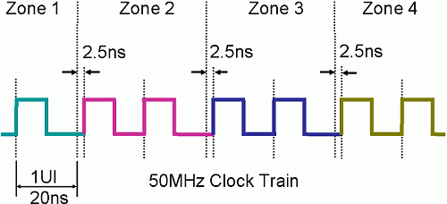
Figure 2 Zone-wise Phase Shifting Clock
Figure 3 shows the measured data. Four zones are marked in the picture.
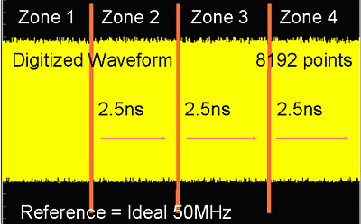
Figure 3 Digitized Waveform of Phase Shifting Clock
The ODM can be applied to this waveform. There are 1281 cycles captured in the UTP so that the reference signal is created as 1281 cycles of cosine & sine waveforms in a pair of 8192-point arrays. The instantaneous phase trend of the signal is derived as Figure 4. It clearly detects that each zone delays 2.5 ns one after another. In this experiment, eight equally spaced digital edges are used to shift the clock stream. In Figure 4, the third zone clock edge is off symmetry by 80 psec. So this method could be applied to find edge placement errors in the digital pin electronics.
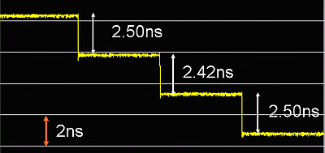
Figure 4 Reconstructed Phase Trend
2. Single Pulse Shift Analysis
In the previous section, the pulse train shifts block-wise. In this section, only a single pulse shifts its location in each zone. Figure 5 depicts the test signal which has three specific locations numbered #1, 2 and 3. At each location a single tooth of the pulse shifts by 2.5, 5 and 7.5ns respectively from its original location.
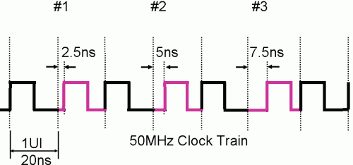
Figure 5 Single Pulse Shifted Clock
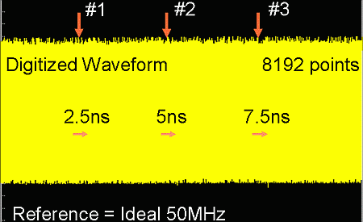
Figure 6 Digitized Waveform of Single Pulse Shifted Clock
Figure 6 shows the measured test signal waveform, which is analyzed with the ODM. The phase trend is reconstructed as Figure 7 shows.
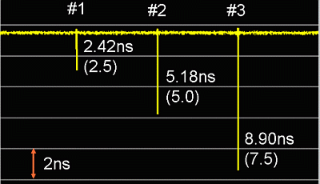
Figure 7 Reconstructed Phase Trend
Three significant tics appear at the locations where the pulses are shifted. It shows this method can be applied to detect only a single clock pulse movement. The accuracy does not seem so good because of the single event. If the event could be measured repetitively, the accuracy may be improved with averaging.
3. Single Edge Shift Analysis
The next experiment is a single edge movement instead of a pulse shift. Figure 8 depicts the test signal waveform. There are three irregular edges buried in the waveform. The rising edge is moved backward 1.0, 1.25 and 1.5ns respectively at the locations numbered as #1, 2 and 3 in the graph. Figure 9 shows the captured waveform.
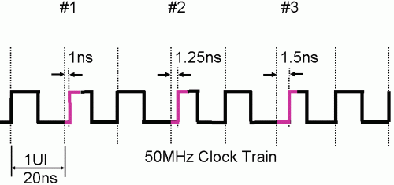
Figure 8 Single Edge Shifted Clock
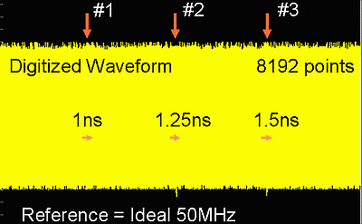
Figure 9 Digitized Waveform of Edge Shifted Clock
With applying the ODM, the reconstructed phase trend appears as Figure 10. At three locations, the trend clearly detects each edge shift. Although there is only one edge shift and a very small amount of shift, the ODM clearly detects them. However the read-out distances seem half of the expected values written in the parentheses.
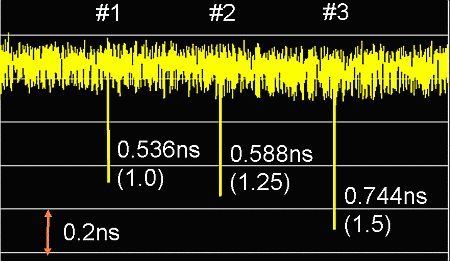
Figure 10 Derived Phase Trend
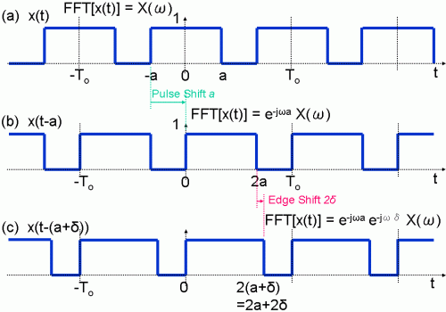
Figure 11 Shifting Clock Waveform and Edge
Let's define the clock waveform in Figure 11(a) as x(t) and its Fourier transform of the fundamental component as X(ω). When the whole waveform is shifted a to the right as (b), its Fourier transform of the fundamental component can be described as e-jωa X(ω), which means the original X(ω) is phase-rotated by a. That is, the shift a corresponds to the phase rotation a. Let's substitue a with a+δ as (c). Then the Fourier transform can be described as e-jωa e-jωδX(ω). This means that the phase rotation δ corresponds to the edge shift 2δ. That's why Figure 10 shows the half of the edge shift values.
Edge shift measurements would be required in, for instance, "the write pre-compensation test" in read/write channel devices for hard disk drives (HDD), and "the write strategy test" in optical disk drives (ODD).
4. Clock Jitter Analysis
Jitter is phase fluctuation so that the ODM can be applied to clock jitter measurement. A 50 MHz clock is measured with the "WGD" digitizer running at 320 Ms/s. Figure 12 shows the measured waveform. There are 2557 cycles of clock pulses. The upper right graph is a close-up view of the first 31 points. A single clock pulse is constructed by approximately 6 points. The lower graph is the reconstructed clock pulse by reshuffling.
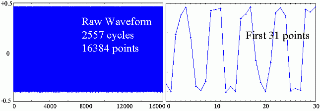
Figure 12 Digitized Waveform of 50MHz Clock
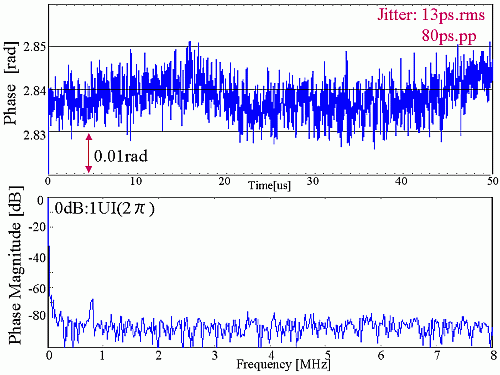
Figure 13 Derived Jitter and Its Spectrum
By ODM processing, the phase trend is derived as shown in the upper graph of Figure 13. The jitter of this phase trend is calculated as 13ps.rms and 80ps.pp. The fluctuated phase data is processed by the FFT, deriving the spectrum of the jitter as the lower graph of Figure 13. There are low frequency jitter components and some spurious jitter around 800 kHz found in the spectrum display.
In order to validate the result, the reconstructed clock pulse is analyzed at the rising and falling edges.
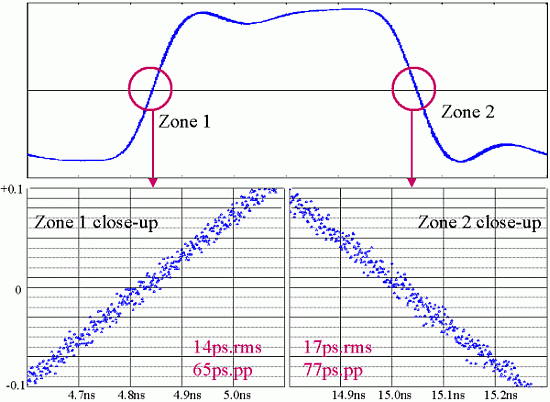
Figure 14 Rising Edge/Falling Edge Fluctuation
The upper graph in Figure 14 is the reconstructed waveform, which contains all 16384 points in a single cycle of the clock. The lower graphs are a close-up view in the vicinity of the zero crossing areas. The scattered data points are processed and calculated its fluctuation as the jitter of the clock. The results are 14 ps.rms and 65 ps.pp on the rising edge, and 17 ps.rms and 77 ps.pp on the falling edge. The test result derived by the ODM has a good correlation to these values.